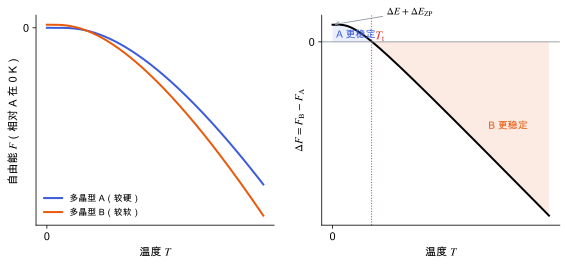

位置、路径与目录
自由能与熵
概念节点领域：统计力学与采样研究线：结构预测与能量景观v0.2 · 2026-11-10
草稿已有正文，但来源和推导还没有核查完，不能当作定论。
有限温度下为什么比较自由能而不是能量，振动熵和构型熵怎样进来。
0 K 时体系待在能量最低的结构里。温度升高后，体系会在许多微观状态之间涨落，能占据的状态越多越有利，这就是熵的作用。所以有限温度下判断哪个结构稳定，要比较自由能
F = E - TS
而不是能量 E。
对晶体来说，最重要的熵来自原子振动。振动越“软”（频率越低），同样温度下能激发的振动状态越多，熵越大。于是能量稍高但更软的多晶型，可能在高温下反超能量更低但更硬的多晶型。

用 Einstein 模型真实计算的两个多晶型（约化单位，ħ=k_B=1）：A 的 0 K 能量更低但振动更硬，B 能量高一些但有一个更软的模式。左：两者的自由能。右：自由能差，在转变温度 T_t 处变号。
| 符号 | 是什么 | 图里对应 |
|---|
| T | 温度 | 横轴 |
| F_{\mathrm{A}}, F_{\mathrm{B}} | 两个多晶型的自由能 | 左图蓝线、橙线 |
| \Delta F | F_{\mathrm{B}} - F_{\mathrm{A}} | 右图黑线 |
| \Delta E + \Delta E_{\mathrm{ZP}} | 0 K 时的差：静态能量差加零点能差 | 右图 T=0 处的值 |
| T_{\mathrm{t}} | 转变温度，\Delta F = 0 | 右图红色点线 |
模型参数：A 的三个频率为 1.0、1.4、2.0，B 为 0.55、1.2、2.0；B 的静态能量比 A 高 0.5。
高温极限下，每个模式的自由能约为 k_B T\ln(\hbar\omega/k_B T)，所以低频模式让自由能下降更多。这就是图中软的多晶型 B 在高温下胜出的原因。
构型熵
如果晶体中存在无序（分子取向无序、质子位置无序、部分占据），不同排列方式也贡献熵。W 种等能排列给出 S_{\mathrm{conf}} = k_B\ln W。CSP 通常只考虑有序结构，会漏掉这一项（见 质子归属：盐与共晶）。
超出谐振近似
强非谐体系（分子转动、大振幅运动、接近熔点）用谐振公式不可靠，需要用分子动力学或蒙特卡洛做自由能计算 [Frenkel & Smit 2002]：
- 只用 Γ 点频率：F_{\mathrm{vib}} 需要对整个布里渊区求和，低频声学支贡献大；只用 Γ 点会系统地偏差。
- 虚频直接丢掉：虚频说明结构不在极小，自由能没有意义；要先解决结构问题（见 声子与晶格动力学）。
- 不同多晶型用不同 q 网格：误差不抵消，可能大于自由能差本身。
- 固定体积：谐振自由能在 0 K 的体积上算，忽略了热膨胀，这正是 准简谐近似与热膨胀 要补的。
子条目
- 准简谐近似与热膨胀让声子频率随体积变化，从而得到热膨胀和有限温度结构；以及这种近似在哪里失效。
参考资料
教材Frenkel & Smit 2002
D. Frenkel, B. Smit, Understanding Molecular Simulation, 2nd ed., Academic Press (2002)
位置：系综、自由能计算方法
尚未实际查阅，目前只是拟查阅书目
论文Nyman & Day 2015
J. Nyman, G. M. Day, Static and lattice vibrational energy differences between polymorphs, CrystEngComm 17, 5154 (2015)
位置：多晶型间的静态能量差与振动自由能差的大小分布
尚未实际查阅，目前只是拟查阅书目
论文Hoja et al. 2019
J. Hoja et al., Reliable and practical computational description of molecular crystal polymorphs, Sci. Adv. 5, eaau3338 (2019)
位置：分层排序：DFT、多体色散与振动自由能
尚未实际查阅，目前只是拟查阅书目
论文Kirkwood 1935
J. G. Kirkwood, Statistical Mechanics of Fluid Mixtures, J. Chem. Phys. 3, 300 (1935)
位置：热力学积分
尚未实际查阅，目前只是拟查阅书目
论文Zwanzig 1954
R. W. Zwanzig, High-Temperature Equation of State by a Perturbation Method. I. Nonpolar Gases, J. Chem. Phys. 22, 1420 (1954)
位置：自由能微扰
尚未实际查阅，目前只是拟查阅书目
论文雷达里的相关论文
按关键词匹配，最近的在前；点开在雷达里阅读。
关联与核验
核验与修订
暂无核验记录。
修订记录
- v0.22026-11-10初稿正文：亥姆霍兹与吉布斯自由能、谐振振动自由能与零点能、软模式带来的熵、构型熵、热力学积分与自由能微扰、多晶型排序中的作用、常见坑；配图 1 张（真实计算 Einstein 模型）
发现问题
在 GitHub 上公开提交纠错，会附上节点编号和版本，不含你的笔记。
提交纠错